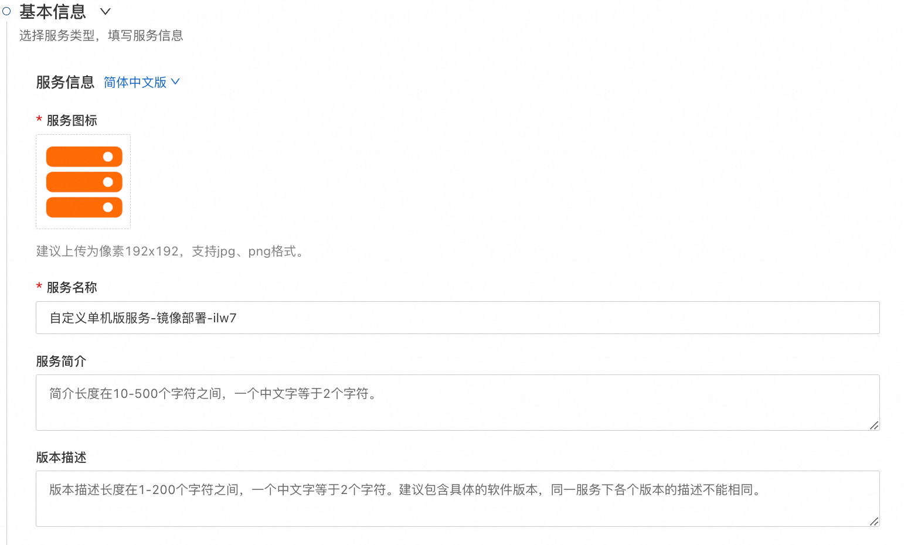
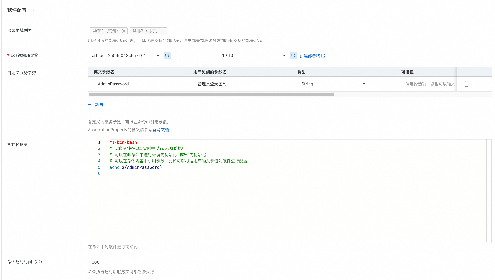
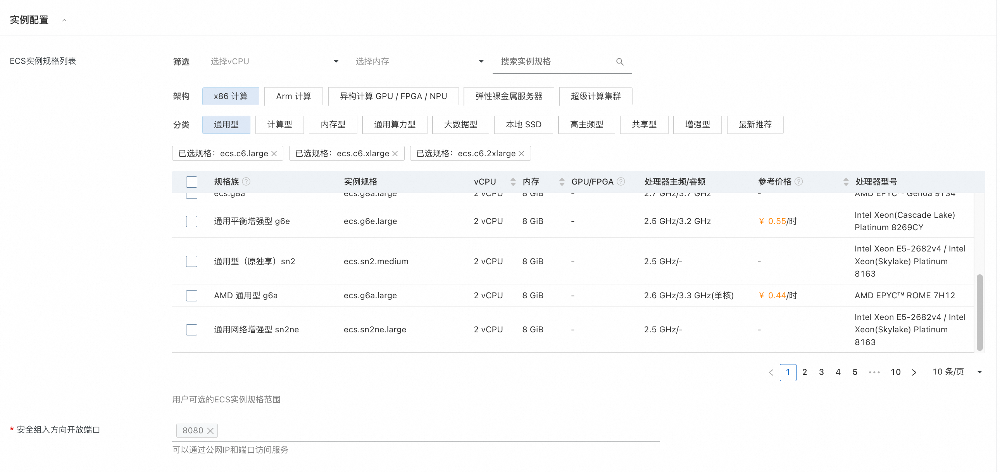
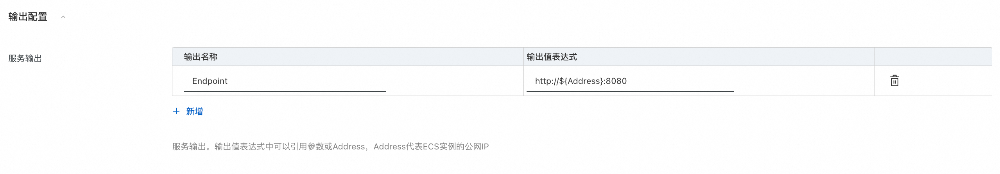

服务模板说明文档
服务模板说明
本文介绍基于ECS镜像、支持自定义的单机ECS服务模板，本示例对应的Git仓库地址：quickstart-ecs-image。
本示例会自动地构建计算巢服务，具体的服务构建流程为： 1. 服务商需要提前创建好ECS镜像部署物，参考官网文档。 2. 选择此服务模板创建计算巢服务，在软件配置中关联镜像部署物，定制服务的入参和输出配置。 3. 提交后自动创建服务，创建过程大约需要2分钟，创建成功后服务变成待预发布状态。
服务部署架构
此服务模板构建出的服务的部署架构为单机ecs部署。

计费说明
通过此服务模板构建服务不产生费用。
用户部署构建出的服务时，资源费用主要涉及：
- 所选ECS实例规格
- 磁盘容量
- 公网带宽
计费方式包括： - 按量付费（小时） - 包年包月
预估费用在部署前可实时看到。
RAM账号所需权限
此服务模板构建出的服务需要对ECS、VPC等资源进行访问和创建操作，若使用RAM用户创建服务实例，需要在创建服务实例前，对使用的RAM用户的账号添加相应资源的权限。添加RAM权限的详细操作，请参见为RAM用户授权。所需权限如下表所示：
| 权限策略名称 | 备注 |
|---|---|
| AliyunECSFullAccess | 管理云服务器服务（ECS）的权限 |
| AliyunVPCFullAccess | 管理专有网络（VPC）的权限 |
| AliyunROSFullAccess | 管理资源编排服务（ROS）的权限 |
| AliyunComputeNestUserFullAccess | 管理计算巢服务（ComputeNest）的用户侧权限 |
| AliyunComputeNestSupplierFullAccess | 管理计算巢服务（ComputeNest）的服务商侧权限 ｜ |
自定义服务配置
本服务模板支持服务商自定义服务配置。在通用场景的基础上对软件的参数和服务的输出进行配置。 在服务创建完成后，服务商可以进行编辑定制。
本服务模板支持服务商指定以下信息：
| 配置组 | 配置项 | 说明 |
|---|---|---|
| 服务信息 | 服务图标 | 服务图标。 |
| 服务信息 | 服务名称 | 服务名称。 |
| 服务信息 | 服务简介 | 服务简介。 |
| 服务信息 | 版本描述 | 初始版本的版本描述。 |
| 软件配置 | 部署地域列表 | 支持用户部署的地域列表。部署物必须分发到这些地域。不填代表支持所有地域。 |
| 软件配置 | ECS镜像部署物 | ECS镜像部署物和部署物版本，ECS镜像可以包含服务商软件以及运行环境。 |
| 软件配置 | 自定义服务参数 | 服务商自定义的入参，用户在创建服务实例时可见。可以在命令和输出中引用入参。 |
| 软件配置 | 初始化命令 | 通过初始化命令可以对软件进行初始化，也可以执行其他需要的操作。 |
| 软件配置 | 命令超时时间 | 命令执行超时后服务实例部署失败。 |
| 实例配置 | ECS实例规格列表 | 用户可选的ECS实例规格范围。 |
| 实例配置 | 安全组开放端口 | 安全组开放的的入方向端口列表，可以在开发的端口上提供服务。 |
| 输出配置 | 服务输出 | 服务的输出配置，服务实例部署成功后用户可以在服务实例详情中看到输出信息。 |
服务构建流程
- 填写服务的基本信息

- 填写软件配置

- 填写ECS实例配置

- 填写服务输出配置

- 点击创建服务，等待服务构建完成。构建完成后您可以尝试创建服务实例或者对服务配置进行修改。
服务配置
服务交付
其他说明
© 2009-2022 Aliyun.com 版权所有